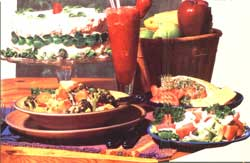

Up Until last summer, MOTHER Eco-Village wasn't equipped with a facility suitable for food preparation. In seasons past, we hired outside caterers to provide our visitors with quality meals and snacks. Some of these services) worked out well Others did not. Seeking a more reliable and permanent solution (one in keeping with MOM's philosophy) to our culinary quandary we decided that if you want to do something right, you just have to do it yourself. The outcome: Last year MOTHER's own restaurant opened at the Eco-Village ... to rave reviews, we're pleased to say from visitors and staff alike.
We cooks at MOM's eatery not only provided folks with delicious vegetarian (and semi veterinarian) dishes but also taught show-how's on natural-food- related topics., We frequently became pupils, too, benefiting from the vast pool of experiences and suggestions so generously shared by our guests, The exchange of recipes and ideas between staff and visitors-not to mention the resulting tasty dishes-enriched us all.
For instance, two of the young visitors who left us with some very fond memories were Ben Stuki and Casey Fenyo. Ben, who hails from Mauk, Georgia, was a bright and competent kitchen helper. Casey was quite good at prepping vegetables (it's amazing how hard some one will work in exchange for a few carob brownies), but could disappear without a trace at the mention of dishwashing.
For those readers who didn't get a chance to visit us this past year (or for those of you who did stop by but forgot to write down the formulas for your favorite dishes), here are a few of our most requested recipes. Of course, we hope you'll come see us in person this season at the Eco-Village Restaurant and sample our delicacies firsthand. In the meantime, perhaps this popularly acclaimed menu will tide you over. Here's to good eating!
SMOOTHIES
1 cup of fruit juice (apple orange, papaya, or whatever you prefer)
6 ice cubes
1 banana (or a peach, a nectarine, or a handful of strawberries)
1 teaspoon of honey
1 teaspoon of vanilla
Blend the juice and ice in a blender until the cubes are liquefied. After adding the fruit, vanilla, and honey, continue processing until the mixture is smooth. This should yield approximately 2 cups of sweet, delicious fruit shake. (This recipe is from Eco-Chef Linda Doyle, who also contributed MOM's favorite bread in issue 86.)
Cheese and Herb Salad Dressing
1 cup of mayonnaise
1/2 cup of chopped parsley
1/4 cup of Parmesan cheese
2 tablespoons of lemon juice
1 garlic clove, crushed
1 teaspoon of basil
Combine all the ingredients (using milk or buttermilk as a thinner, if needed) ahead of time and refrigerate so the flavors have a chance to blend. Then pour the dressing over your favorite salad at mealtime.
Vegetable Barley Soup
1 onion
1 tablespoon of oil
3 cups of water or vegetable stock
1/2 cup of barley
3 carrots, sliced
1 bunch of broccoli, cut in pieces
3 medium potatoes, diced
2 medium tomatoes, diced
1 teaspoon of basil
1 teaspoon of oregano
1/4 teaspoon of coriander
1/4 teaspoon of dill
1 teaspoon of Spike seasoning sea salt to taste
pinch of parsley, chopped
pinch of mint, chopped
First, sauté the onion in oil, add the water (or stock) and barley, and bring the mixture to a boil. Then reduce the heat and simmer until the barley is almost done (approximately 20 minutes). Add the vegetables and spices and continue to simmer until The vegetables are tender. (NOTE: You can use almost any vegetables you want in this soup. Here at MOM's restaurant we just add whatever goodies our gardens are yielding at the time.) Add the fresh parsley and mint just before serving. This pot should give you about 8 to 10 steaming bowlfuls.
Chick-Pea Spread (for Sandwiches or Dip)
3/4 cup of chick-peas (garbanzo beans), cooked
2 garlic cloves, crushed
1 teaspoon of basil
6 to 8 tablespoons of lemon juice
1/2 teaspoon of oregano
1 teaspoon of sea salt
1/2 cup of tahini
1/2 to 1 cup of water or bean liquid
Combine everything but the water (or bean liquid) in a blender and process until smooth. Then gradually add the liquid until the mixture reaches the desired consistency for dipping or spreading. (NOTE: Here at the Eco-Village we serve this special spread on bread with a slice of Swiss cheese, a slice of tomato, and a topping of our "super sprouts" a combination of clover, alfalfa, and fenugreek.)
Honey Carob Cake
2/3 cup of butter
1-1/4 cups of honey
1/3 cup of carob powder
2 eggs
1 teaspoon of vanilla
2-1/2 cups of flour
1-1/2 teaspoons of baking soda
1/2 teaspoon of salt
1 cup of milk
Cream the butter first and then gradually blend in the honey. Next, add the carob powder and mix well. Beat in the eggs and vanilla and finally add the dry ingredients-a little at a time, mixing in some milk with each addition-and beat till smooth. Now, pour the batter into greased 8-inch round cake pans and bake at 325'F for about 50 minutes (or until a toothpick poked into the middles comes out clean). When done, turn the steaming layers onto a rack to cool. And while you wait, prepare the following frosting to top off your cake:
Minty Cream Cheese Frosting
1 8-ounce package of cream cheese, softened
3 tablespoons of honey
2 tablespoons of juice (orange, we're told, is tastiest) or milk
1 teaspoon of mint extract
Mix all the ingredients together and beat till smooth and fluffy (NOTE: If you're a carob-lover, try adding a tablespoon of carob powder to the above ingredients.) When your cake has cooled, ice it with this tasty topping and sit back to enjoy all the compliments you'll undoubtedly get from your satisfied family and friends!
|
 |
|
|